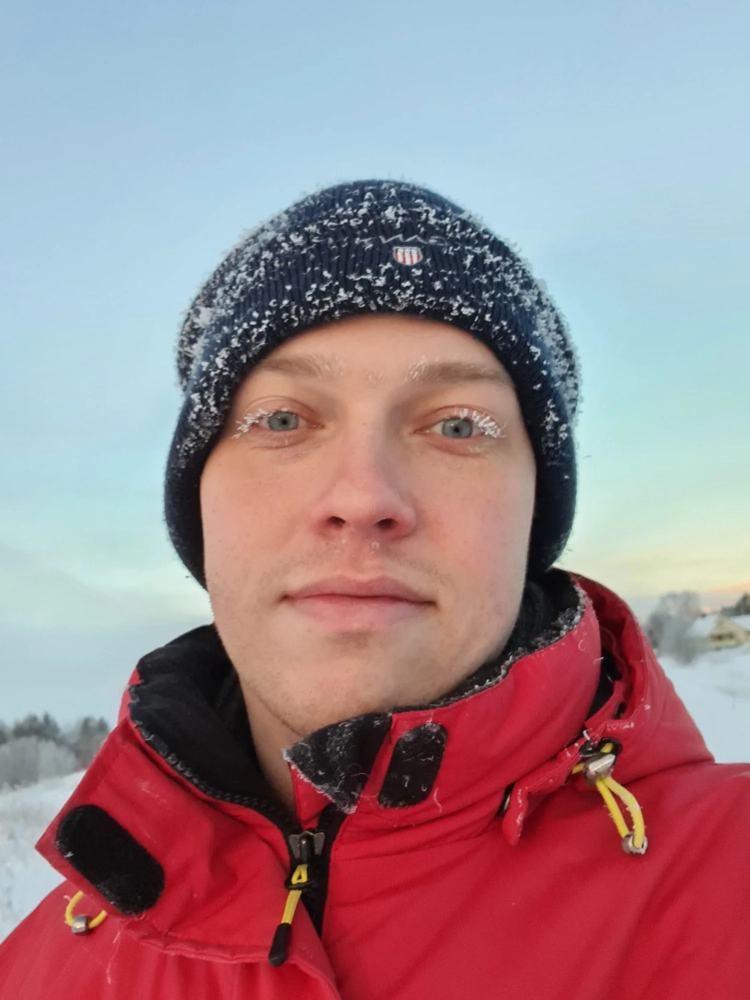

The practice
I take on a small number of projects each year and give them the time a good idea deserves.

About
Born and raised deep in the Norwegian forests of Tynset, I’ve always had a strong connection to nature, open spaces, and the quiet inspiration that comes with them. Around twelve years ago, I packed my bags and headed south to Oslo, where I’ve been navigating life in the city’s asphalt jungle ever since.
Outside of design, you’ll often find me staying active, exploring the outdoors, gaming with friends, or chasing fresh air somewhere beyond the city limits. Whenever I’m back home, I spend as much time as possible in the woods with my family’s endlessly enthusiastic Finnish hounds.
I’m also passionate about creative side projects. Whether it’s solving problems on paper, crafting visual concepts for screens and interfaces, or simply making things for the joy of creating, creative work adds a lot of positivity to my everyday life.
Missing Østerdalen became enough of a motivation that, in 2025, my partner and I bought a cabin plot nestled between Tynset and Brydalen. With one foot in the countryside and the other in the city, we’ve set ourselves a long-term goal: transforming a traditional log structure into a horseshoe-shaped cabin retreat. The logs themselves have quite a story, having been transported from Tynset Camping after the family-run campsite closed its doors following 65 years of operation.
Every now and then, I escape to the mountains for a ski trip. Some of my all-time favourites include Kvitfjell, Savalen, Norefjell, Tryvann, and Trysil. I love places that make me feel small in the best possible way, whether that’s a mountain peak, a snowy ski slope, or a clear night sky. Maybe that’s why traces of forests, landscapes, and the occasional cosmic influence often find their way into my creative work as well.
Where I focus
Exploring ways to make products, services, and experiences a little easier to understand and use. Fewer screens, clearer paths, and typography that behaves the same on a phone in mittens as on a studio monitor.
Identity, illustration, and communication that help ideas feel clearer and more human. Marks, characters and layouts that carry a story rather than decorate one.
Personal projects, design exercises, and creative detours that keep me learning. Small things made for the joy of it, where the only brief is curiosity.